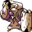

#306
Conkeldurr
Fighting
Abilities: Guts, Sheer Force, Iron Fist
Base stats BST 505
HP105
Attack140
Defense95
Speed45
Sp. Atk55
Sp. Def65
Evolution
None detected.
Level-up learnset
LevelMoveType
Lv. 1LeerNormal
Lv. 1Low KickFighting
Lv. 1PoundNormal
Lv. 1Rock ThrowRock
Lv. 12Focus EnergyNormal
Lv. 16Bulk UpFighting
Lv. 20Rock SlideRock
Lv. 24SlamNormal
Lv. 30Scary FaceNormal
Lv. 36DynamicpunchFighting
Lv. 48Stone EdgeRock